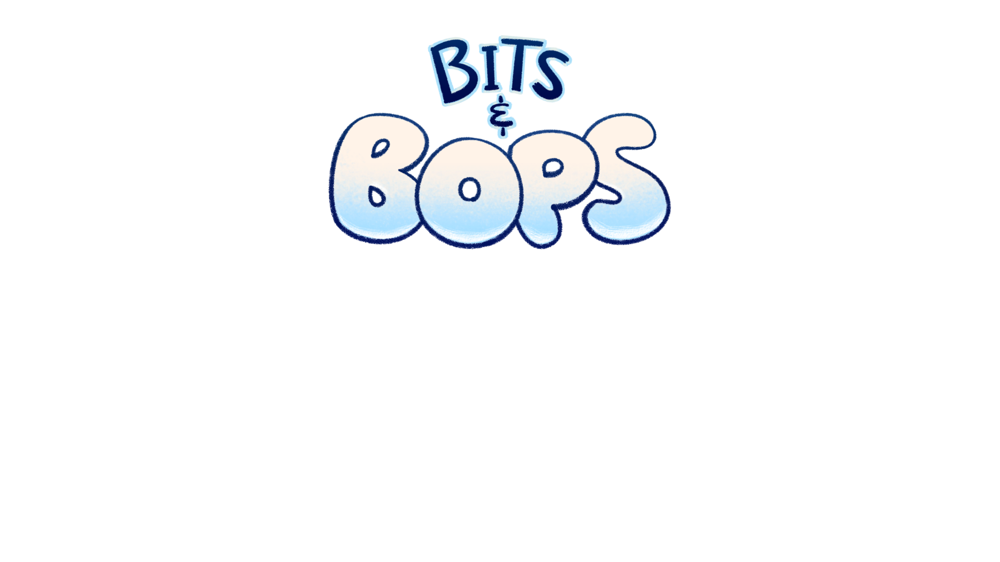

BROWSER EDITION · BITSANDSECRET
Попади в ритм.
Данные игры загрузятся при первом запуске.
Прогресс сохраняется в этом браузере.
Enter выбрать · ←→ меню · Space ритм

BROWSER EDITION · BITSANDSECRET
Данные игры загрузятся при первом запуске.
Прогресс сохраняется в этом браузере.
Enter выбрать · ←→ меню · Space ритм